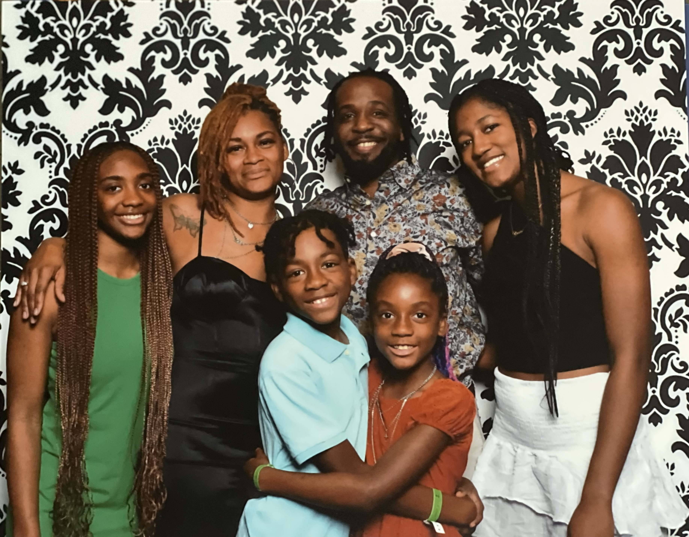

Michael J. Johnson Jr.
Data Analyst | Problem Solver | Innovator
About Me
I was born in Kansas City, Missouri, in 1983, to parents who instilled in me the values of resilience and determination. My father, a dedicated military serviceman, played a pivotal role in shaping who I am today. His unwavering commitment to providing for and raising my brother and me taught me the importance of perseverance and focus, even in challenging times. These lessons have guided me throughout my personal and professional journey.
After graduating high school, I enlisted in the United States Air Force, where I served with distinction as part of the 509th Munitions Squadron. My time in the military not only sharpened my leadership and problem-solving skills but also fueled my interest in technology and innovation. Following my honorable discharge, I transitioned into the vacation rental management industry, where I developed a strong appreciation for data analysis and system optimization.
Currently, I am pursuing a Bachelor of Science degree in Computer Science at Florida A&M University, with a focus on data analytics and cloud computing. My academic journey reflects my passion for technology and my desire to leverage it to solve real-world problems. Inspired by trailblazers in both technology and my cultural heritage, I aim to use my skills to contribute to advancements in the tech industry while also mentoring the next generation of innovators.
Outside of my studies, I enjoy exploring new technologies, hunting, fishing, and spending quality time with my family. As a proud father of four, I am especially inspired by my daughters, who are also excelling in their academic pursuits at Historically Black Colleges and Universities (HBCUs). Faith, family, and a commitment to lifelong learning are the cornerstones of my journey, and I strive to lead a life that blends purpose, innovation, and service.
| Category | Details |
|---|---|
| Education | B.S. in Computer Science, Florida A&M University |
| Experience | 3+ years in IT and cloud-based solutions development |
My Work
Watch My Video
Skills
- HTML & CSS
- JavaScript
- Problem-Solving
- Cloud Engineering (AWS, Google Cloud)
- Database Management (SQL, NoSQL)
- Leadership and Team Collaboration
Contact Me
Find me on LinkedIn
Download my ResumeMotivation
“The group consisting of mother, father, and child is the main educational agency of mankind.”
– Martin Luther King Jr.